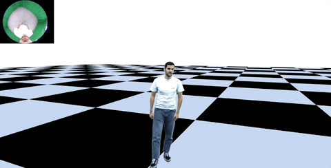
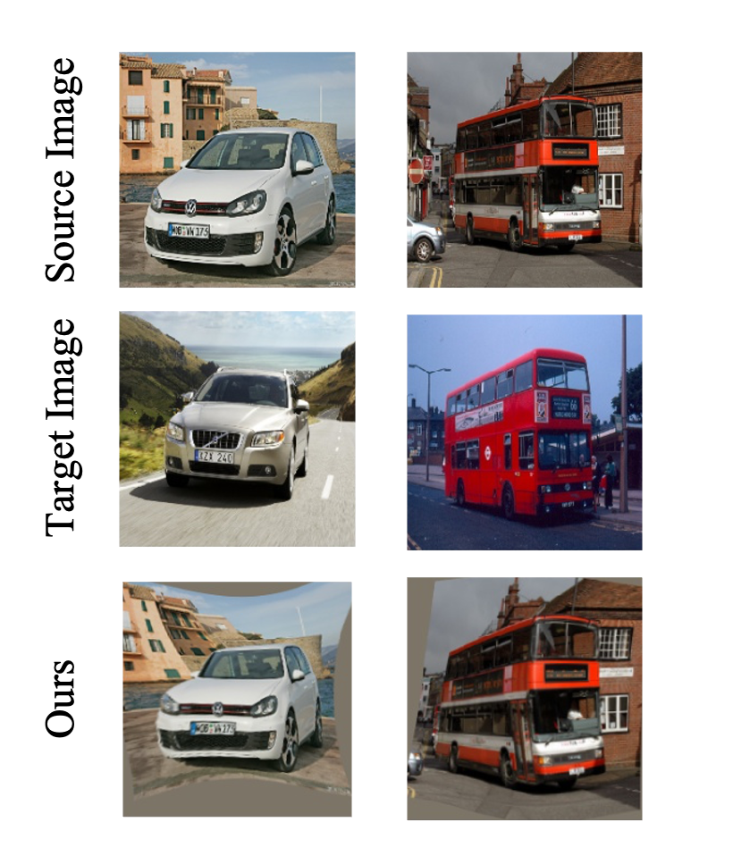
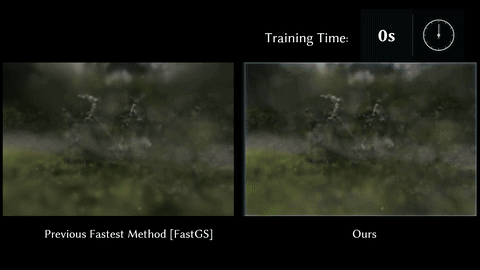

Biography
I am currently a Ph.D. student at the Visual Computing and AI department, Max Planck Institute for Informatics, working with Prof. Christian Theobalt , Dr. Marc Habermann and researchers from Google through VIA center. Prior to this, I obtained my Master's degree in Robotics from Carnegie Mellon University with Prof. Fernando De la Torre and Bachelor's degree from Xiamen University in my beautiful hometown.
My research lies at the intersection of Computer Graphics, Computer Vision and Generative AI. I worked on digital human animation / rendering / relighting and egocentric vision, where I had humble experience in multi camera systems and large scale data capture.
Selected Publications

EgoRelight: Egocentric Human Capture and Illumination Recovery for Relightable and Photoreal Avatar Rendering
Jianchun Chen, Yinda Zhang, Rohit Pandey, Thabo Beeler, Marc Habermann, Christian Theobalt
ACM Transactions on Graphics (Proceedings of SIGGRAPH), 2026
TLDR: Built a mixed-reality telepresence system in-the-wild with egocentric human capture, relightable avatar curation and HDR environment map recovery.

EgoAvatar: Egocentric View-Driven and Photorealistic Full-body Avatars
Jianchun Chen, Jian Wang, Yinda Zhang, Rohit Pandey, Thabo Beeler, Marc Habermann, Christian Theobalt
SIGGRAPH Asia Conference Papers, 2024
TLDR: Put together an egocentric human motion & mesh capture pipeline and a motion-driven Gaussian avatars for virtual teleconferencing.

A Sequential Learning-based Approach for Monocular Human Performance Capture
Jianchun Chen, Jayakorn Vongkulbhisal, Fernando De la Torre
Proceedings of the IEEE/CVF Winter Conference on Applications of Computer Vision, 2024
TLDR: Some attempts to track 3D garments from monocular video using a learning to optimize idea, while not working ubiquitously.

Arbicon-net: Arbitrary continuous geometric transformation networks for image registration
Jianchun Chen*, Lingjing Wang*, Xiang Li, Yi Fang
Advances in Neural Information Processing Systems (NeurIPS), 2019
TLDR: Early work applying what people now called neural fields to 2D image registration problem.

OLATverse: A Large-scale Real-world Object Dataset with Precise Lighting Control
Xilong Zhou, Jianchun Chen*, Pramod Rao*, Timo Teufel, Linjie Lyu, Tigran Minasian, Oleksandr Sotnychenko, Xiao-Xiao Long, Marc Habermann, Christian Theobalt
Proceedings of the Computer Vision and Pattern Recognition Conference, 2026
TLDR: A real-world capture w/ ~800 objects from the Lightstage, hopefully pave the way for 3D generative models to have realistic relightable appearance.

Relightable Holoported Characters: Capturing and Relighting Dynamic Human Performance from Sparse Views
Kunwar Maheep Singh, Jianchun Chen, Vladislav Golyanik, Stephan J. Garbin, Thabo Beeler, Rishabh Dabral, Marc Habermann, Christian Theobalt
Proceedings of the Computer Vision and Pattern Recognition Conference, 2026
TLDR: A new scheme of full-body human capture from the Lightstage, paired with relighting techniques from sparse imagery inputs.

StructGS: Fast Structure-Aware Training for 3D Gaussian Splatting
Linjie Lyu, Ayush Tewari, Jianchun Chen, Thomas Leimkühler, Christian Theobalt
SIGGRAPH Conference Papers, 2026
TLDR: A structure-award splitting approach that converges 3DGS in ~50s.
Academic and Industry Experience
Student Researcher
Google XR, Zurich, CH • 2025/10 - 2026/02
Research Scientist Intern
Meta Reality Labs Research, Pittsburgh, US • 2022/09 - 2023/03
Worked on garment registration and relighting from the Lightstage capture.
Research Assistant
New York University, New York, US • 2018/07 - 2018/10
Worked on learning 2D image and 3D point cloud registration.
Professional Service
Workshop Organizer
Conference Reviewer
SIGGRAPH, SIGGRAPH Asia, Eurographics, CVPR, ECCV, ICCV, 3DV, WACV, AAAI
Personal Gallery
I love photography, traveling and anything outdoors. When my algorithms are not generating image, I generate image with my own camera. If you find me anywhere, I would be more than happy to help with your portrait shoots!

St. Moritz, Switzerland

Zermatt, Switzerland
Deutsch Bahn, Germany

Tre Cime, Italy
Venice, Italy